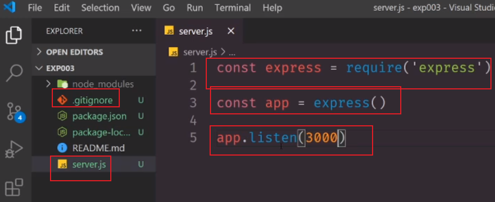
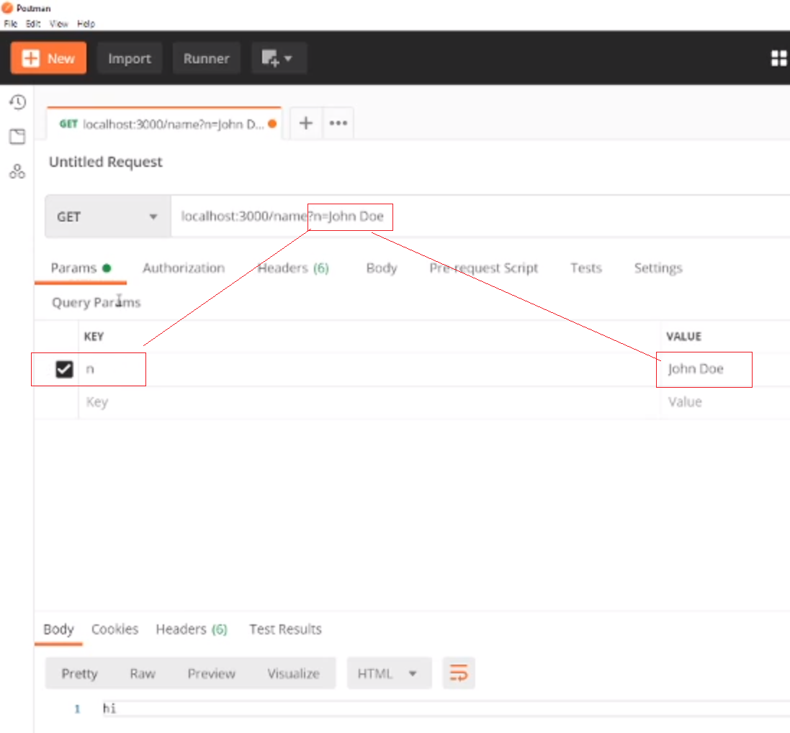
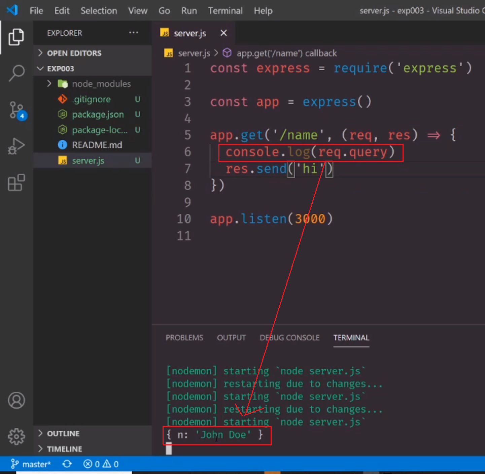
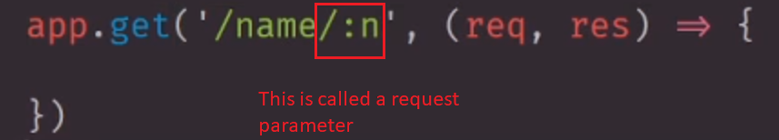
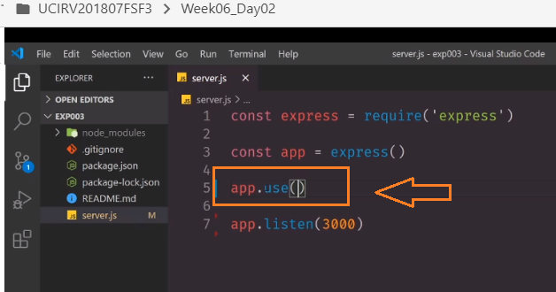

What does 'req' and 'res' stand for? Request (the URL, params, and queries) and Response (how we want to respond to the request. Yesterday we sent am html file back. You can also send a status code or a console log etc...)
How to start an app:
type in "nodemon" in the console. Everytime u make a change and save, it will restart the server.
add to the url: ?n=John Doe
gives request query...
"req.query" is actually and object with the key value pair that we created in the previous screenshot. (n=John Doe)
Params are variable values that appear on your route. You express them in your route's pattern.
"localhost:3000/name" does not exist anymore.
Now it's specific and the user has to put in a name. Example: "localhost:3000/name/Brian"
in order to make a to do list app, we need to be able to create to do list items. In order to do that we need a post route. We can't get data out of it, so we need to setup our app to accept JSON data. In order to do that we need to declare something called "middleware" middlewear steps in between your front end and backend.
the way that you declare middleware is with a method in express app called "app.use()"
const express = require('express')
const { join } = require('path')
const app = express()
app.use(express.static(join(__dirname, 'public')))
app.use(express.urlencoded({ extended: true }))
app.use(express.json())
app.use(require('./routes'))
app.listen(process.env.PORT || 3000)